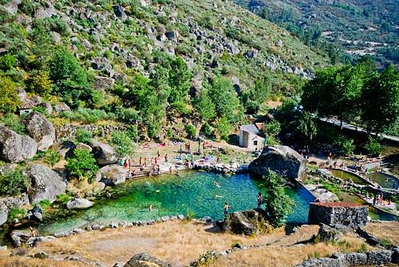

Into the Mountains
A full, unhurried day in Portugal's highest mountain range — glacial valleys, wildflower plateaus, and a summit with views across two provinces.

A local favourite and the perfect introduction to Serra da Estrela. Loriga sits at the mouth of its own glacial valley, with cobbled streets, a natural river beach, and a quieter, more intimate feel than the better-known mountain stops. It was here that the first Portuguese aviators completed their transatlantic crossing in 1922, and a small monument commemorates the feat. A gentle hour here — coffee, a walk, a dip in the river if the group is game — sets the tone beautifully for the day ahead.
Start here, and start early. The Zêzere glacial valley is the most dramatic landscape in all of Serra da Estrela — a classic U-shaped valley carved by ice over thousands of years, its flanks draped in wildflowers throughout July. The drive down from the high plateau toward the town of Manteigas is one of the great scenic roads in Portugal: pull over often. There's a well-marked hiking trail along the valley floor, and the river is cold and clear enough for a swim.
A short drive from the valley, Covão d'Ametade is a glacial lagoon tucked between granite cliffs and ancient pine forest — one of those places that seems too beautiful to be real. The water is an eerie, luminous green. Short walking paths ring the lagoon, making it an ideal picnic spot. Note: the access road from Manteigas is single-lane with traffic control stops in summer — budget an extra 30 minutes.
Drive the N339 all the way to the top of Torre, Portugal's highest point. Even in July, bring a layer — it's noticeably cooler up here. On a clear day you can see deep into Spain to the east and toward the Atlantic haze in the west. There's a small cluster of cafés at the summit — a good moment for lunch before descending toward Belmonte.
About 45 minutes east of Torre, Belmonte is the birthplace of Pedro Álvares Cabral, the explorer who discovered Brazil in 1500. The medieval castle sits high above the town with commanding views across the Cova da Beira plains. An hour is plenty — pair it with a wander through the old village streets before checking in for the evening.
A former 16th-century convent converted into one of Portugal's most atmospheric hotels. Stone corridors, vaulted ceilings, hilltop views — and a legendary 8-course dinner showcasing wild boar, regional cheese, and local wine pairings. Waking up in a centuries-old monastery is something the whole group will remember for years. Rated 4.7 ★ (900+ reviews).
Budget alternative: Hotel Belsol, Belmonte ★4.3 — comfortable, good pool, excellent breakfast.